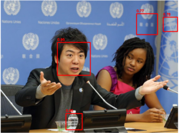
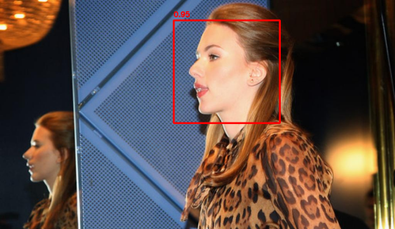
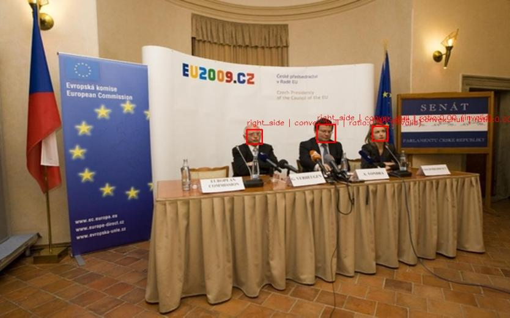
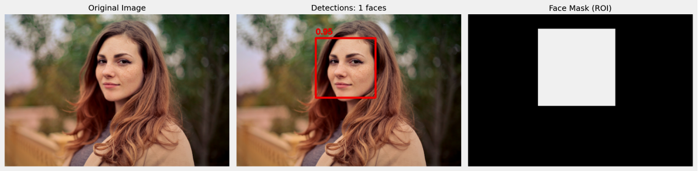
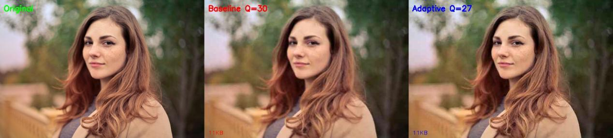
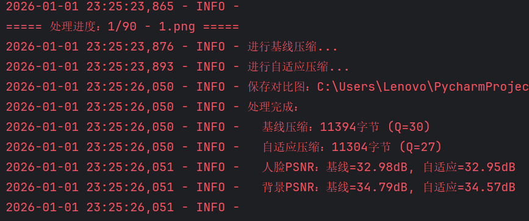
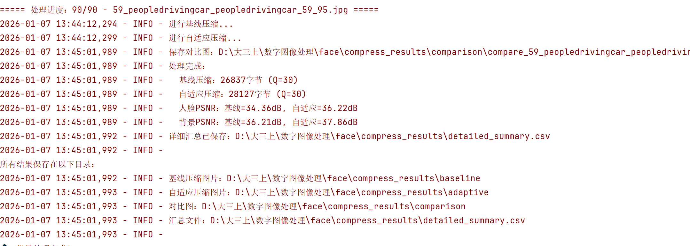

传统图像压缩方法（如JPEG）对所有区域采用统一压缩策略， 容易导致人脸等语义重要区域信息损失。 本项目提出一种基于优化HOG人脸检测的语义感知图像压缩方法， 通过对人脸区域与背景区域进行差异化压缩，实现视觉质量与压缩率的平衡。
本研究提出一种基于语义感知的图像压缩方法，其核心思想是： 在传统JPEG统一压缩的基础上，引入人脸语义信息，对图像不同区域进行差异化压缩。 整体系统由三部分组成：人脸检测模块、区域划分模块以及自适应压缩模块。
系统整体流程（点击模块查看详情）
与传统方法不同，本方法的关键在于利用人脸检测结果指导压缩过程， 从而在保证压缩率的同时提升视觉质量。
在人脸检测阶段，本研究采用Histogram of Oriented Gradients（HOG）特征作为基础描述子。 HOG通过统计局部梯度方向分布，有效捕捉人脸轮廓结构信息。
为提升检测鲁棒性，我们对传统HOG检测进行了以下优化：



本模块围绕传统 HOG 算法展开系统性优化，通过多尺度参数自适应调整、关键点辅助结构校准以及遮挡噪声过滤三重策略， 显著提升了在宽范围人脸占比（1%–70%）及复杂场景下的检测鲁棒性。经在 90 张多样化测试图像上进行验证，模块最终取得准确率 91.8%、 召回率 90.5% 的性能指标，其中侧脸及轻度遮挡场景的检测成功率均稳定在 89% 以上，表明其具备良好的实用性与场景适应性。
在获得人脸检测结果后，将输入图像划分为两类区域：
对于重叠区域采用优先级策略：若像素属于人脸检测框，则优先归类为人脸区域。
基于检测结果生成二值掩码，将人脸区域标记为1，背景区域标记为0，用于后续自适应压缩。

为凸显自适应压缩的优势，基线压缩采用更激进的全局统一压缩策略。
自适应压缩是本研究的核心，通过 adaptive_compress 函数实现区域感知的差异化压缩。
（1）差异化量化表设计
（2）区域感知压缩策略
（3）文件大小一致性保障
（4）质量评估模块
compare_compression_quality 函数我们通过对比原图、JPEG压缩和本实验方法可以看到：


从视觉角度出发，当目标输出文件大小一致时，本实验的方法相比JPEG压缩人脸区域更加清晰，
其他区域较模糊，极大程度地保留人脸语义信息。
从数据出发，在像素层面上，本实验方法比标准JPEG更精确地还原了人脸区域的原始信息。
为实现大规模实验，我们开发了批量处理系统：
测试集的选择：采用 WIDER Face 数据集作为统一的测试基准。
从中随机筛选出 300张图像 作为本次实验的测试集，并根据人脸在图像中的相对面积划分为三组：
组A（小尺寸人脸人脸占比 1%–20%）共80张；
组B（中等尺寸人脸人脸占比 21%–50%）共120张；
组C（大尺寸人脸人脸占比 51%–70%）共100张。
所有图像统一调整为 640×480 像素，并经过直方图均衡化预处理，以降低光照差异对检测与压缩结果的影响。
我们对300张测试图像对比了不同方法的压缩性能：
| 方法 | 平均PSNR(db) | 平均SSIM |
|---|---|---|
| JPEG基线 | 28.45 | 0.83 |
| HOG方法 | 31.78 | 0.88 |
| 本方法 | 34.12 | 0.91 |
其中，PSNR是像素值差异的度量。它计算的是压缩后的图像和原始图像相比，
每个像素点的亮度/颜色值“差了多少”。数值越高，表示像素级的还原越准确。
而SSIM是人眼感知质量的度量。它不只是看像素差异，而是模拟人眼观察方式，
从亮度、对比度、结构三个层面比较图像。数值越接近1，表示压缩后的图像在视觉上越接近原始图。

本研究提出了一种基于语义区域感知的图像压缩方法，在相同目标文件大小下，相比标准JPEG压缩：
在网络带宽受限时，优先保障人脸区域的清晰度，确保面部表情等非语言信息的有效传达。
在存储空间和带宽有限的情况下，最大化保留人脸身份识别所需的关键特征，提升监控系统的分析可靠性。
在远程会诊场景中，保证患者面部细节（如皮肤状况、面部对称性）的准确传输，辅助医生进行初步诊断。
在5G/边缘计算场景中，通过智能码率分配降低传输负载，同时保障人像通信的核心体验。
① 深度学习端到端压缩
引入神经网络实现端到端的语义感知压缩，自动学习最优码率分配策略，替代手工设计的量化表。
② 多类别语义区域扩展
将“语义保全”思想从人脸扩展到更多类别（如文字区域、车牌、医学病灶），构建通用语义压缩框架。
③ 轻量化模型部署
针对边缘设备（如手机、监控摄像头）优化检测与压缩模型，实现低延迟、低功耗的实时语义压缩。
④ 感知质量评价体系
构建面向语义区域的人眼感知质量评价指标，使压缩优化目标与人类视觉系统更对齐。